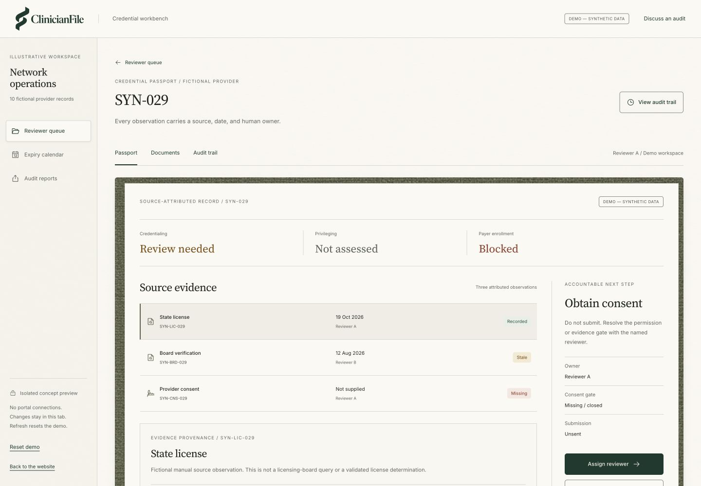

Credential Desk
Provider dossier/document intake and missing-item queue.
First pilot focus
Product / Research-stage concept
Five proposed modules, built around credentialing operations. Start with the dossier and missing-item queue; expand only where authorized access and measurable benefit are established.
A working concept preview
Explore a real interface with ten fictional records, source evidence, reviewer decisions, and a reversible local audit trail.
Open the reviewer queue
The five proposed offers / Original scope retained
Provider dossier/document intake and missing-item queue.
First pilot focusLicense/sanction/board source-check orchestration with timestamped evidence.
Proposed moduleExpiry and recredentialing calendar.
Proposed modulePayer enrollment/PECOS status tracker with human submission.
Proposed moduleNetwork-directory discrepancy and audit export.
Proposed moduleFit before replacement
Internal specialists, CAQH/PECOS workflows, outsourced CVOs, Certify, and Medallion already address parts of this work. Test overlap, access, and switching cost before adding another system.
Read the alternatives and source contextThree separate responsibilities
Credentialing, privileging, and payer enrollment have different purposes and decision owners. The workbench never converts one status into another.
Explore the permission boundariesStart with the observed workflow